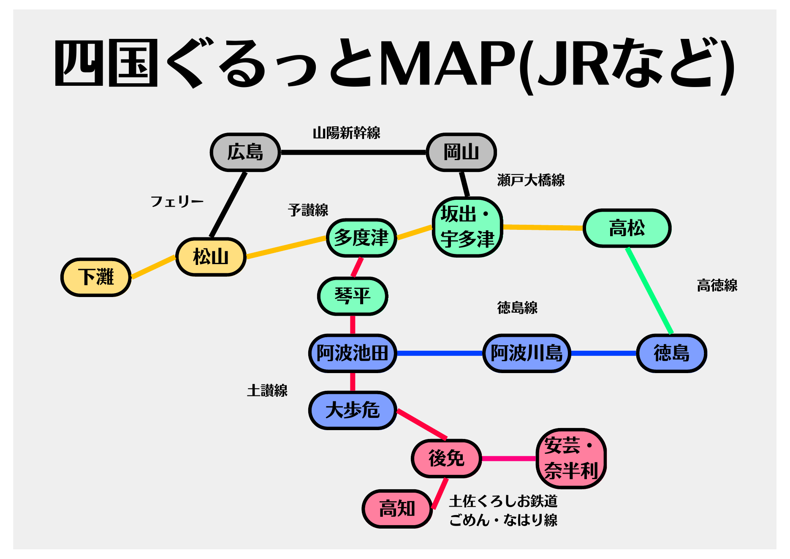
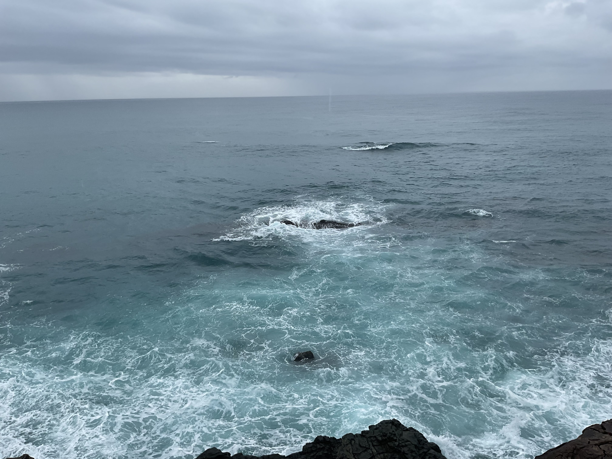
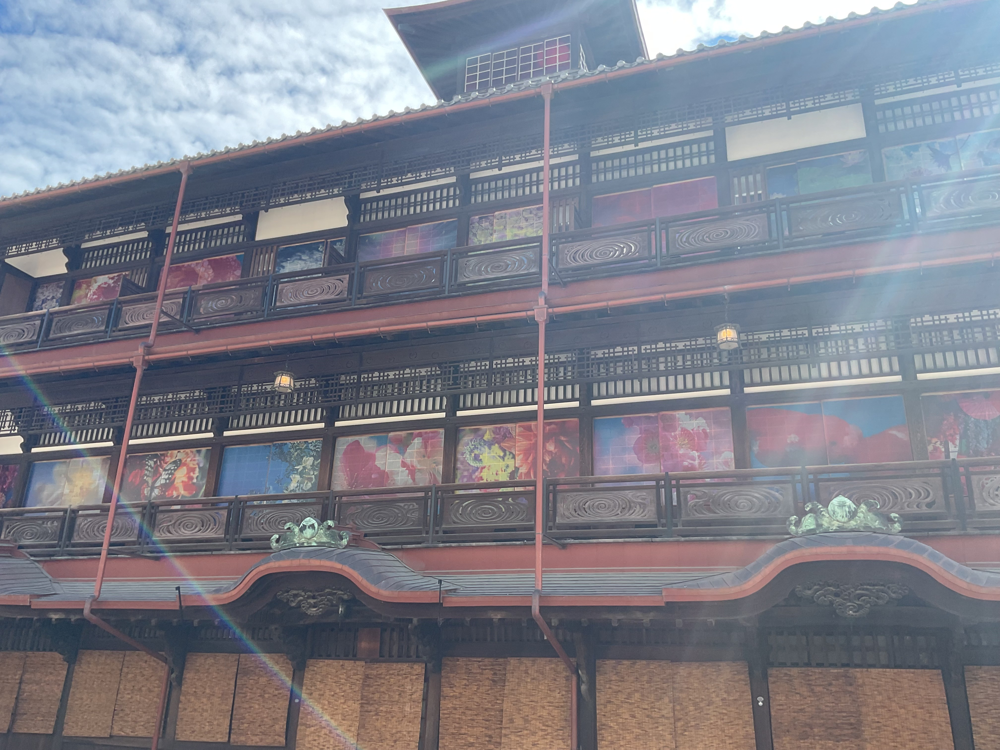
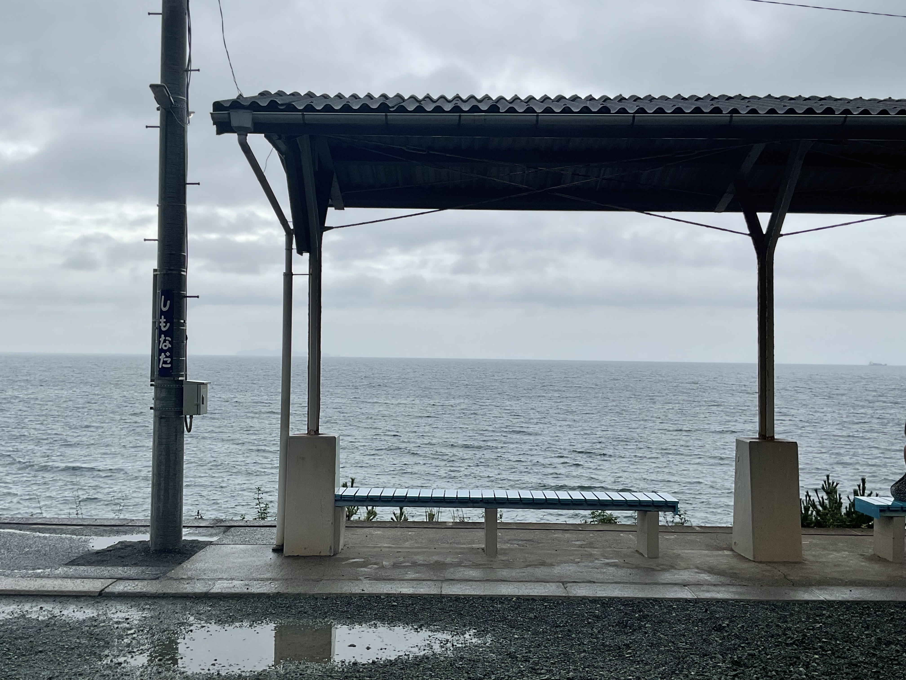

FIELD NOTE 02 / SHIKOKU EDITION
四国ぐるっと
リフレッシュ旅
高知・香川・徳島・愛媛。4県をめぐりながら、知らない町の距離感と空気を自分の足で確かめた、7日間の一人旅です。
SHIKOKU ROUND TRIP
四国
ぐるっと
リフレッシュ旅 4県をめぐる、7日間
ぐるっと
リフレッシュ旅 4県をめぐる、7日間
- 高知県
- 香川県
- 徳島県
- 愛媛県
STARTING POINT
近そうに見えて、
ちゃんと遠い四国へ。
香川県高松市出身の自分にとって、四国4県は子どもの頃に訪れたことのある場所でした。でも大人になってからは、ほかの県へ遊びに行く機会がなく、高知市や徳島市の市街地も歩いたことがありませんでした。
帰省の機会を入口に、4県をぐるっと巡ることに。近そうに見えても、町と町の間にはしっかり距離がある。地図だけでは分からない景色や空気を、移動しながら確かめる旅になりました。
7 DAYS / ITINERARY
7日間でめぐった、実際の旅程
高知市街・高知城・ひろめ市場
桂浜・安芸 — 太平洋沿いを走り、香川方面へ
岡山で家族を訪ねる移動日
高松・栗林公園・屋島・綾川
徳島市街・眉山・阿波川島
松山城・大街道・道後温泉
下灘・松山観光港から広島へ

DAY BY DAY
毎日ちがう景色を、
自分の足で確かめる。
PHOTOGRAPHS
日付を追って、
旅の景色をたどる。
旅の始まりから帰路まで、時系列で並べた写真。場所の名前だけでなく、そのときの光や風、立ち止まった時間が残っています。






AFTER THE TRIP
行きたい場所を、
自分の旅程にする。
旅先を調べ、移動を組み立て、実際に町を歩く。東北編に続いて、この四国編でも「自分で考えたことを実行する」時間を重ねることができました。
4県それぞれの色をたどりながら、ひとつの旅にしていく。
お遍路、うどん、道後温泉、阿波踊り、坂本龍馬。出発前に思い浮かべていた言葉の向こう側に、それぞれの町の暮らしと距離感がありました。